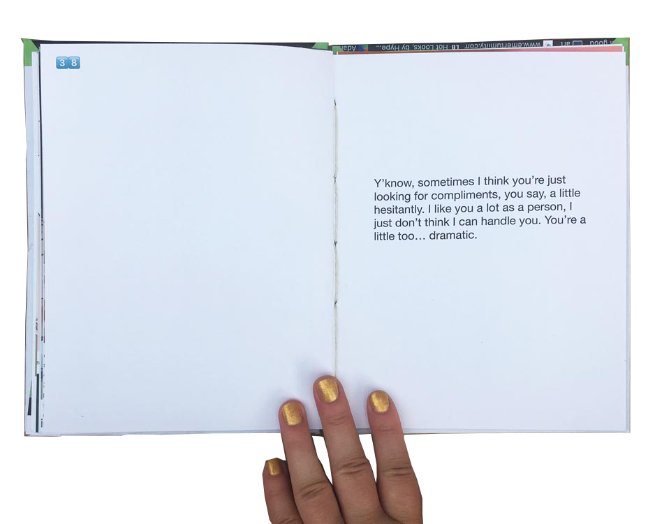
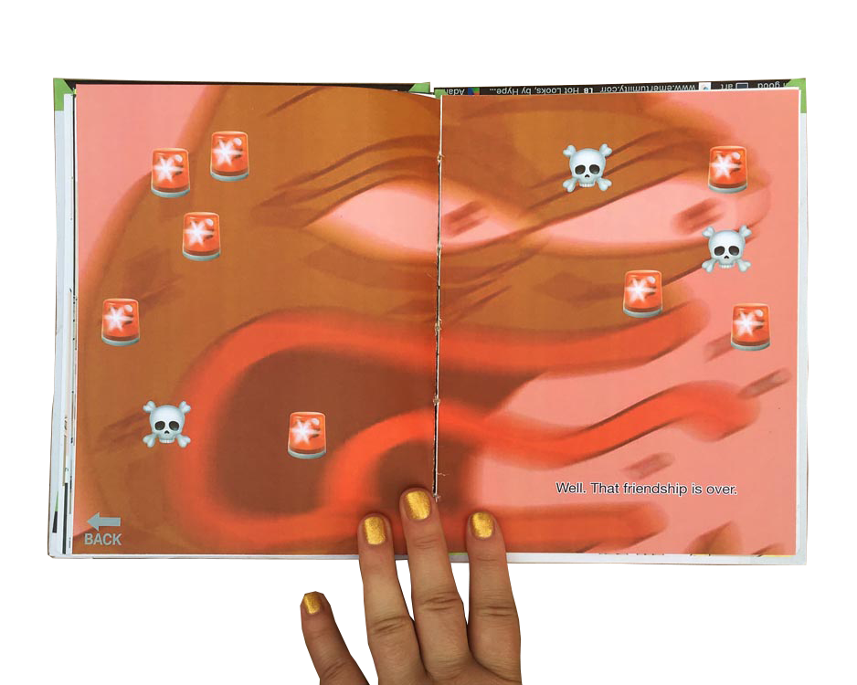
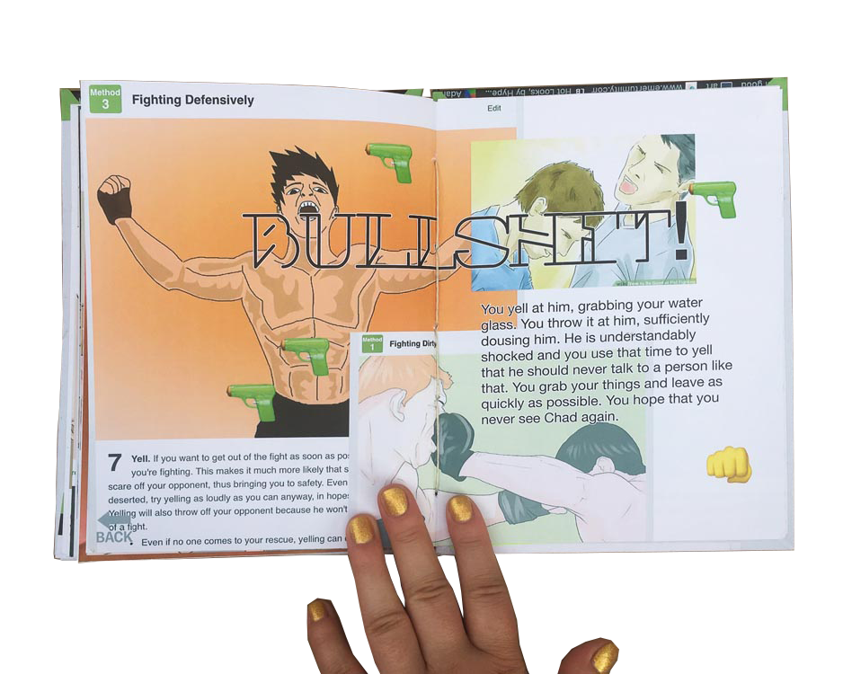
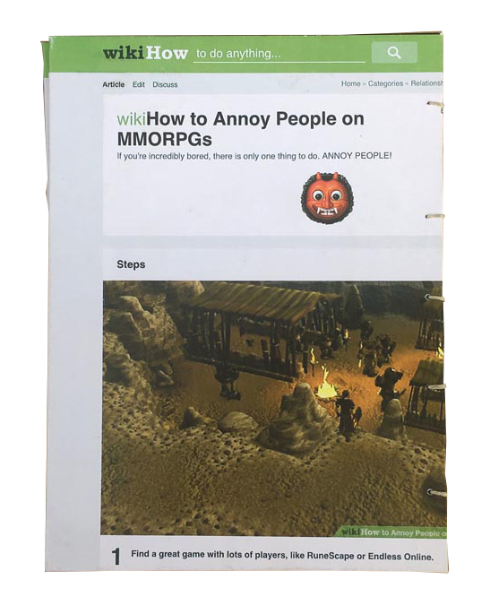
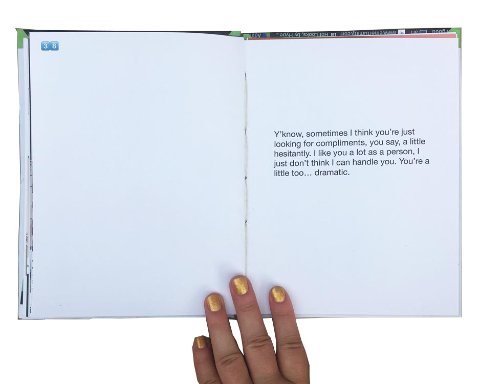
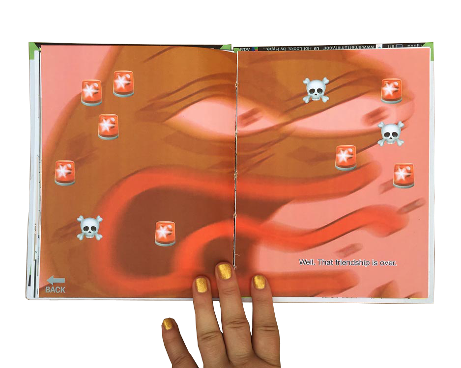
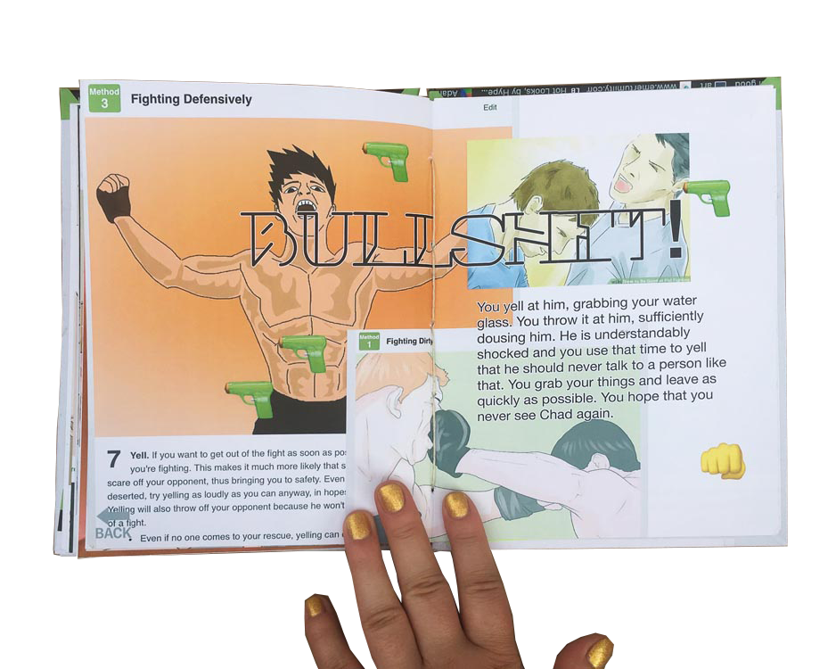
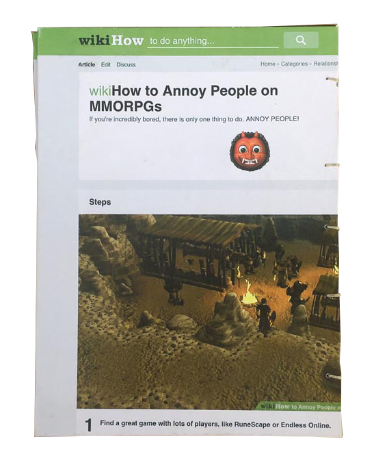

aka 👹 aka how to deal with assholes
have you ever been sitting at dinner when your racist grandpa opens his big stupid mouth? what do you do? bite your tongue and try to ignore it? leave the room? start an argument? in this book, you can find out. using a choose-your-own-adventure style narrative, the reader traverses three scenarios with assholes.
originally this book was going to be about how it sucks there aren't a lot of resources for developing interpersonal skills, especially with negative people, but really, this book is about the nuance of social interaction. even in these difficult situations, every action we make (or don't make) is a choice, for better or worse. so, sometimes you can resolve the problem, but sometimes you're the asshole.
the book uses imagery from wikihow, memes, and emojis to illustrate both the physical situation and the internal feelings of the narrator. it's chaos with a grid. it was also printed and coptic stitch bound by me.
 






